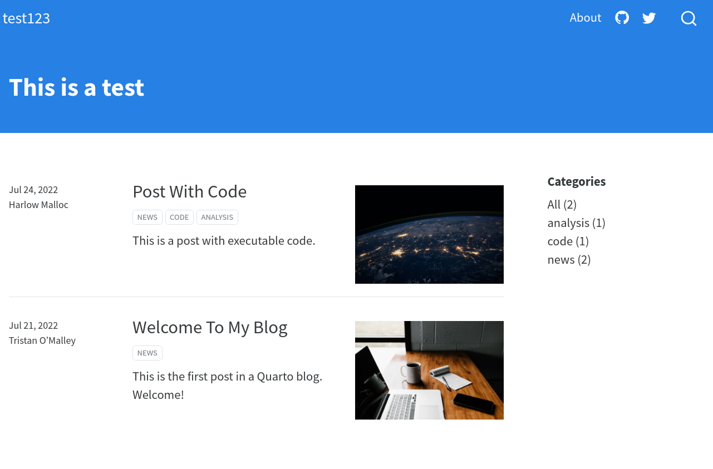
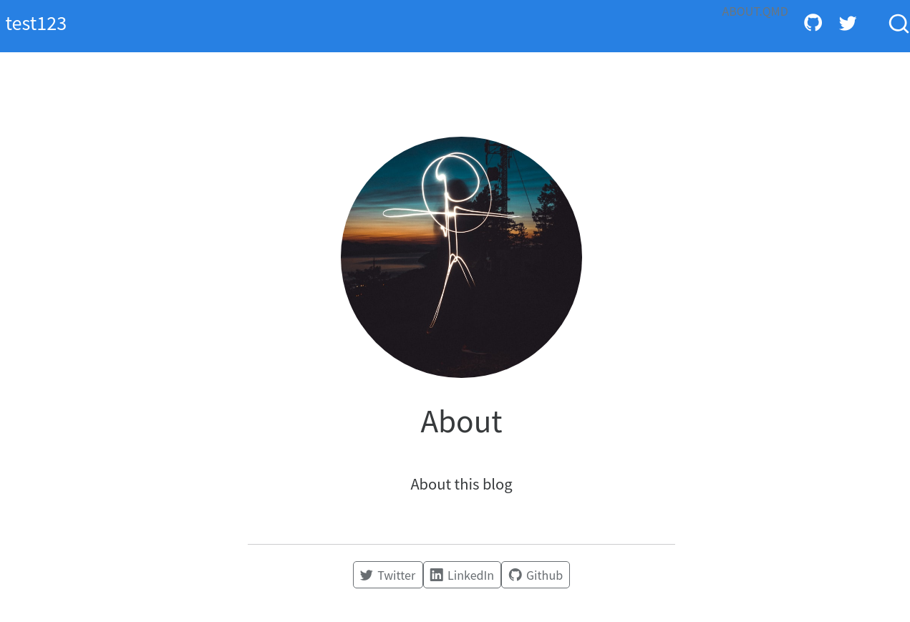
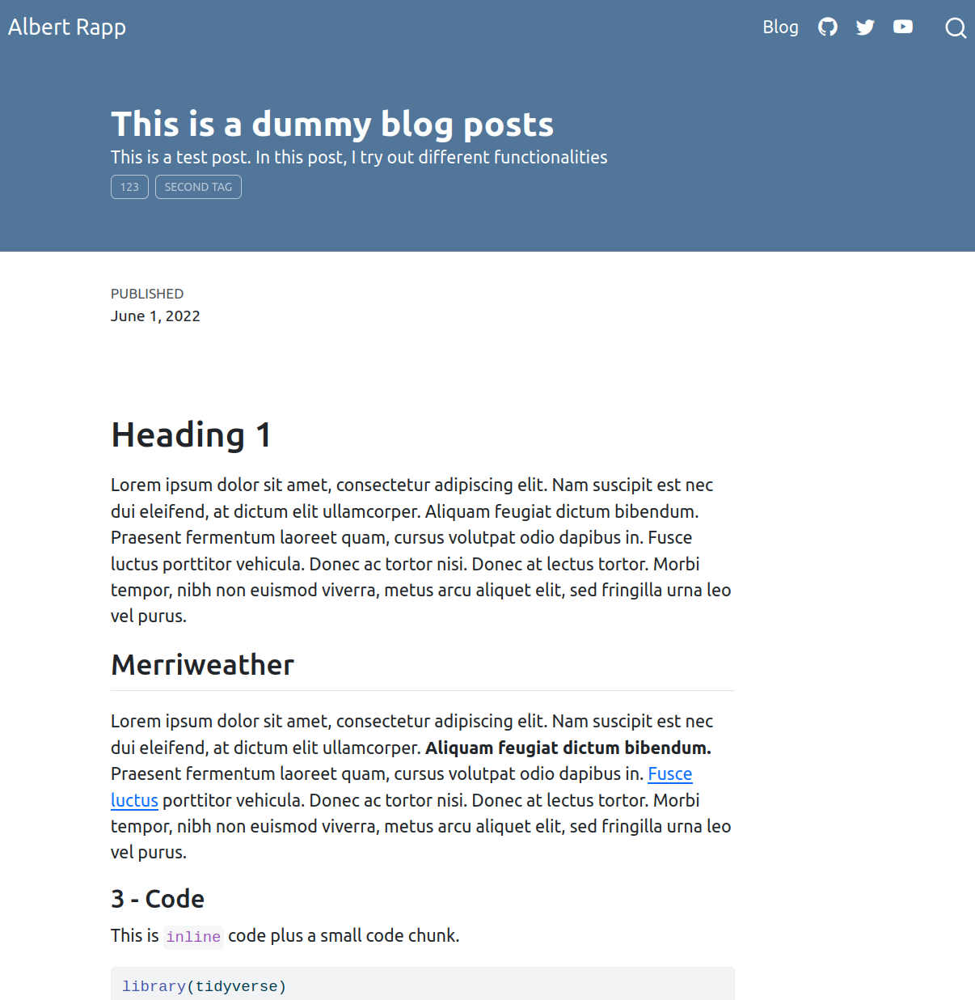
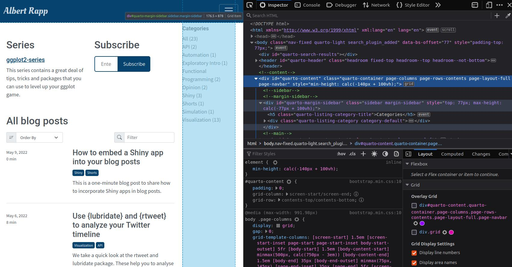
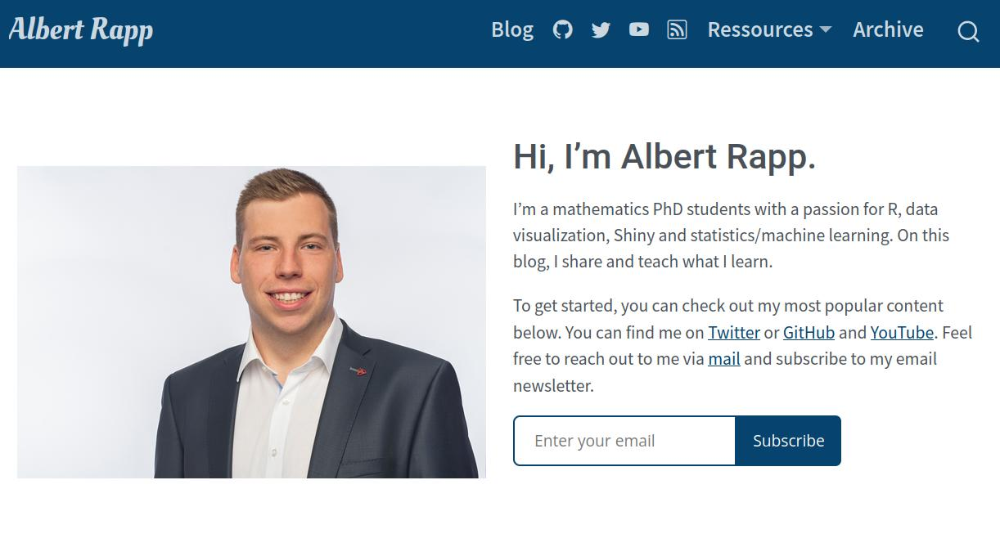
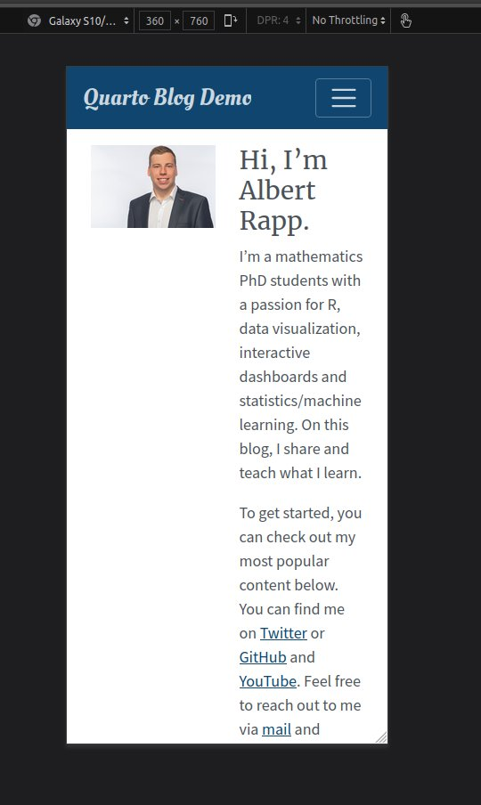
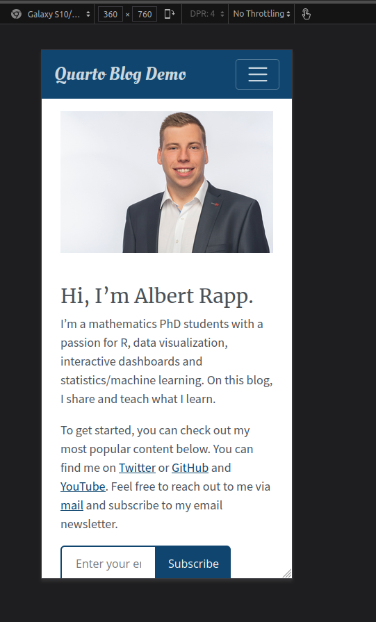
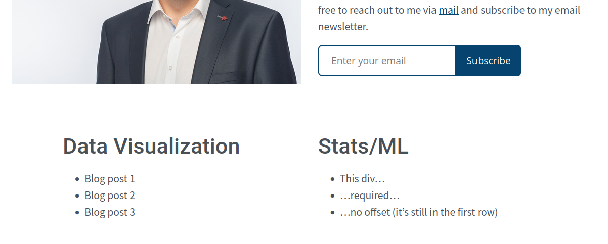
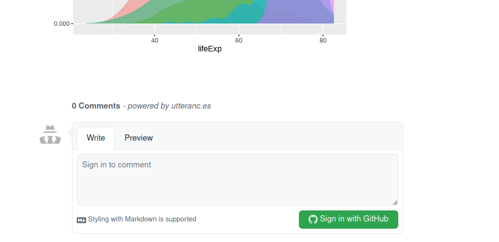

The ultimate guide to starting a Quarto blog
Blogging is great for many reasons. And with Quarto, blogging has never been easier. Within a few clicks, you can create your own Quarto blog. And the best part is: With Quarto you can customize basically everything according to your wishes.
Today, I want to show you how to build a blog with Quarto. This in-depth guide is the result of hours of working with Quarto’s amazingly detailed documentation. Hopefully, it will save you a lot of time and helps you start your own blog. Here’s what we will cover:
- Three reasons for starting a blog
- How to initialize your Quarto blog
- Create your own series
- Let your readers interact with you
- Make your blog unique with your own theme
- Build a custom landing page
- Make your posts ROBUST with
{renv} - Cookies, Google analytics, Quarto extensions and other miscellaneous topics
- Publish your blog
- Writing tips
Notice that this is a lot. I don’t want to brag. But this is a lot. Do yourself a favor and skip the time-intensive steps if you’re just starting out with your blog.
In the beginning, the most important thing is to write regularly. This is WAAAAY more important than, say, using many fancy colors in your blog. At first, you can just go with a pre-defined theme and a standard landing page.
Really, I cannot stress this enough: If you want to start a blog, start writing regularly first. Worry about your design later. The only way I could stress this more would be to say it in Spanish.
And if you’re not sure what steps you can skip from my detailed guide, Beatriz Milz got you covered. In one of her blog posts she shows you how to get started with your Quarto blog in 10 steps. So, you can always start with her intro to get started quickly and then successively add parts from my guide.
Alright, enough chit-chat. Let’s dive in.
Three reasons for starting a blog
In case it is not self-evident of why you should start a blog, let me give you a few good reasons.
Learning: Writing acts as a safeguard from shallow understanding. I cannot count how many time I erroneously thought I’ve understood something. But working on a blog post often showed me that my first “understanding” was wrong. That’s why writing is such an effective tool for learning.
Helping others: When you share your learnings, you will eventually help people who are struggling with similar problems. Don’t worry if you’re not an expert. Usually, people don’t enjoy learning from experts.
Rather. people like to learn from other learners who are just a few steps ahead. That’s because experts tend to leave out details that are “obvious”. Yet, some things are only obvious once you are an expert.Portfolio and job opportunities: If you publish content on the internet, you can always show people what you’ve created. This is great for demonstrating your skills (e.g. when applying for a job). Also, from personal experience I can tell you: Writing in the open can lead to job opportunities. You never know who ends up reading your blog and wants to work with you.
Initialize your blog
Once you have installed Quarto, it is dead-simple to start a blog. If you don’t use RStudio, you’ll have to call
quarto create-project myblog --type website:blogfrom the command line. In RStudio, you’ll have to click on the “new project”-button and the menu will let you create a new Quarto blog.

You should also create a git repo for your blog project (RStudio will ask you if you want that). This lets you revert changes when you break your blog. And after answering all of RStudio’s prompts, you can render your blog with Render Website from RStudio’s Build tab.

First simple changes
First, let us make the about page into a landing page. Use it to introduce your blog to your readers instead of flooding them with a list of blog posts. To do so, rename two files:
- Rename
index.qmdtoblog.qmd - Rename
about.qmdtoindex.qmd

The next easy changes happen in the _quarto.yml file. There, we will mostly change some general info about our blog and stuff in the navbar. Most of the steps are self-explanatory that’s why I only list the steps I think are necessary.
- Name your blog via
website>title - Set a
site-urlfor your blog (this is important for RSS feeds later. If you don’t have a URL yet, you can skip this step for now). - Add a description
- Change reference of
about.qmdand link toblog.qmd - Link your GitHub profile etc.
- Set
theme: theme.scss. This will be used for custom styling later. But you can also setthemeto one of Quarto’s pre-defined themes.
You can also take a look at my _quarto.yml file:
_quarto.yml
project:
type: website
website:
title: "Albert Rapp"
site-url: https://albert-rapp.de
description: "This is Albert Rapp's personal Blog."
navbar:
right:
- text: Blog
href: blog.qmd
- icon: github
href: https://github.com/AlbertRapp
- icon: twitter
href: https://twitter.com/rappa753
- icon: youtube
href: https://www.youtube.com/user/Alfrodo123
#########################
# You can ignore this part in the first step
- icon: rss
href: blog.xml
- text: Ressources
menu:
- text: DataViz Portfolio
href: dataviz_portfolio.html
- text: YARDS
href: https://yards.albert-rapp.de/
- text: R Weekly
href: https://rweekly.org/
- text: R Bloggers
href: https://www.r-bloggers.com/
- text: Archive
href: archive.qmd
google-analytics: <Insert your ID here>
cookie-consent: true
twitter-card:
image: thumbnail_blog.png
card-style: summary_large_image
creator: "@rappa753"
filters:
- code-filename
#########################
format:
html:
theme: theme.scssCreate your first blog post
You can create a new blog post by creating a new .qmd-file in the posts directory. But I recommend that you create a new sub-directory in posts for each new blog post. So, starting a new blog post is just a matter of
- Creating a new directory, say,
posts/new_blog_post. - Create a blank
.qmd-file in this new directory, e.gposts/new_blog_post/post.qmd. - For demo purposes, you can now fill the new file’s YAML header with a few basic properties and fill it with a bit of text, code chunks, math parts etc. If you wish, uou can use the dummy file I used.
If you’ve followed these steps, you can render your new blog post by clicking Render Website in RStudio’s Build tab. This will render all .qmd-files that have not been rendered before. If you want to make changes to a blog post, then you will have to render the respective .qmd-file manually.

Changing metadata
In general, it’s good that you don’t have to re-render everything when you write a new post. The posts/_metadata.yml file ensures that. Its main purpose is to set global options for all you blog posts in the posts directory.
By default, this file sets freeze: true. That’s the reason why you have re-render blog posts manually. In _metadata.yml, we can define more YAML options for all blog posts. Most of the changes I applied in this file are self-explanatory. Thus, I leave you with my _metadata.yml file.
posts/_metadata.yml
# Options specified here will apply to all posts in this folder
# freeze computational output
freeze: true
# Enable banner style title blocks
title-block-banner: false
# Author name of all blog posts
author: 'Albert Rapp'
# Table of content settings
toc: true
toc-depth: 3
page-layout: article
#########################
# You can skip this part in the first step
format:
html:
include-after-body: ../footer.html
comments:
utterances:
repo: AlbertRapp/blogComments
#########################Create your own series
Creating a series (like my ggplot2 series) is great because it bundles similar content into one thread. However, we need to understand listing pages before we can create our own series.
Listing pages (including RSS feeds)
The file blog.qmd is a listing page. It determines what blog posts will be listed on our Blog page. The important stuff happens in this file’s YAML header. Here’s how my header looks.
blog.qmd
---
listing:
contents: posts/**/*.qmd
sort: "date desc"
type: default
categories: true
sort-ui: true
filter-ui: true
fields: [date, title, reading-time, description, categories]
feed: true
page-layout: full
title-block-banner: false
---Let me briefly describe a few of these options:
contents: posts/**/*.qmdmeans that all.qmd-files from thepostsdirectory (and sub-directories) will be included in this listing page. If yourpostsdirectory will only contain.qmd-files, then you may as well just writecontents: posts. In my case, though, some directories contain.md-files that I don’t want to list.If you wish, enable sorting & filtering via
sort-ui: trueandfilter-ui: true. The default sorting is set viasort.I don’t like the title block banner. So I set the corresponding option to false.
More importantly, I want to display a post’s reading time instead of the author (I am the only author anyway). By changing the
fieldsoptions, I can make that happen. In the Quarto’s docs you can find more options forfields.feed: trueinstructs this listing page to generate an RSS-feed. This works only if we have set thesite-urlin our_quarto.ymlfile. If we have enabled RSS feeds, then this listing page will generate a feed that will be saved in the fileblog.xml(because the generating file isblog.qmd). That’s why I have linked the RSS icon in our_quarto.ymlfile toblog.xml.
Creating an archive
Now that we understand listing pages we can create more of them. For example, let us create an archive. This is nothing but a listing page that lists all blog posts without a description.
For this archive I have created a new file archive.qmd in my blog’s main directory and filled it as follows. Notice that page-layout: full. This means that there is no additional side margin for the category labels.
archive.qmd
---
title: "Archive"
page-layout: full
listing:
contents: posts/**/*.qmd
type: default
fields: [date, title]
sort: 'date desc'
---New sub-directory for series
Finally, we can create new listing pages for blog posts that belong to a series. For this to work, all posts that belong to a series must reside in a single new sub-directory of posts. For my blog, I have created a sub-directory posts/ggplot2-tips. And the corresponding listing page is generated by ggplot-series.qmd.
ggplot-series.qmd
---
title: "Series: ggplot2-tips"
listing:
contents: posts/ggplot2-tips
sort: "date desc"
type: default
categories: false
sort-ui: false
filter-ui: false
fields: [date, title, reading-time, description]
page-layout: full
title-block-banner: true
---Now, we have to link to our new listing pages somewhere. I chose to link to my archive in the navbar (see _quarto.yml). And my ggplot2 series found a home above the list of all other blog posts. I made this happen by modifying blog.qmd with regular Markdown magic. This could look as follows:
blog.qmd
---
listing:
contents: posts/**/*.qmd
sort: "date desc"
type: default
categories: true
sort-ui: true
filter-ui: true
fields: [date, title, reading-time, description, categories]
feed: true
page-layout: full
title-block-banner: false
---
# Series
##### [ggplot2-series](ggplot-series.html)
This series contains a great deal of tips, tricks and packages
that you can use to level up your ggplot game.In reality, my blog listings page looks a little bit different because I use two columns (as you can see for yourself) but we’ll come to that shortly.
Interact with your audience
Did you really publish a blog post if no one reads it? Let’s face it. The best content in the world won’t save you from going unnoticed if readers cannot keep in touch. Luckily, we have already taken the first steps to let your audience connect to you.
For starters, your newly created RSS-feed can notify readers whenever you post something new. Also, you can submit your newly created RSS-feed to feed-aggregators like Rweekly or Rbloggers. This will increase your reach in an automated fashion. More importantly, Rweekly and Rbloggers are great places to show your content to the R community.
Style your blog
At some point, you will likely want to customize your blog’s visual appearance. This will include changing colors, fonts and sizes of all sorts of things.
And same as the internet, Quarto runs on HTML and CSS. These two languages are the major players that style your blog. Luckily, you don’t have to know a lot about them to style your blog.
That’s because Quarto already generates a whole lot of HTML and CSS code when you render your blog. Consequently, it takes only a little peaking behind the HTML/CSS curtain to find out what values need tweaking.
I know, this sounds quite complicated. But it isn’t. I don’t know a whole lot about HTML and CSS but I have customized this blog, haven’t I? In fact, working on this blog has been a fun way to learn more about these two languages. To help you do the same, I have created a video that walks you through the process of
- Learning a minimal amount of HMTL/CSS to understand what’s going on,
- Finding HTML/CSS snippets that you want to tweak and
- Making the changes in your blog
You can find the video on YouTube.
If videos are not your thing, here’s the high-level summary:
In quarto.yml, we have set theme: theme.scss. Thus, all visual elements of this blog are governed by this SCSS-file. But it doesn’t exist yet. That’s why everything is set to default values. So, create theme.scss yourself by creating an empty text file and renaming it to theme.scss.
Quarto uses a framework called Bootstrap. In this framework, you can change most parts of your blog by changing a variable’s value. For instance, there is a variable called $primary (variables use dollar signs in SCSS). It governs the main color of your blog. And you can change it to any color you like.
Similarly, your text color is governed by $body-color and your text font is determined by $font-family-base. Quarto lists the most common variables in their docs. For the full list of variables you can check out Bootstrap’s Github page. Here are the variables I have set at the beginning of my theme.scss file.
theme.scss
/*-- scss:defaults --*/
$primary: #06436e !default;
$font-family-base: 'Source Sans Pro', 'Lato', 'Merriweather', 'Roboto Regular', 'Cabin Regular' !default;
$body-color: $gray-700 !default;
$headings-font-family: 'Prata', 'Roboto', 'Playfair Display', 'Montserrat' !default;Notice that my file starts with /*-- scss:defaults --*/. This is just something an SCSS-file expects. Also, make sure to use multiple fonts. As not every computer has every font installed, it’s good to offer multiple alternatives for your reader’s computer.
Consequently, when you want to style your blog, you can stroll through the list of variables. Once you have found a variable that you want to change (most variable names are quite self-explanatory), just throw that into your scss-file.
SCSS-Rules
Unfortunately, not everything can be changed with Bootstrap variables. In this case, you will need to take a look at your blog’s source code. To do so, open your blog in a browser of your choice. Then, right-click anywhere and press “Inspect”. This will open the developer mode of your browser.
Now, you can see your blog’s source code. This view can be quite daunting. But don’t worry. You can ignore most of it. The only thing you need is the most specific description of the part you want to tweak.

You see, in HTML and CSS everything consists of (nested) tags, classes and IDs. All of these are indicated by a different symbol:
<...>stands for tag, e.g.<div> </div>(This is a section).stands for class, e.g..grid(This is grid class object)#stands for ID, e.g.#my_about_page(This is a name that you can access in your CSS code)
As you move your cursor through the HTML code, your browser will show you what element in your blog corresponds to the code you’re currently hovering over. This helps you to find the HTML code responsible for the part that you want to tweak. Once you have found the desired code section, the CSS-code will also show you a mix of tags, classes and IDs that describe this element.
For example, each blog title is described by #title-block-header.quarto-title-block.default .quarto-title .title. Just copy this from your browser’s developer page and put it into your SCSS-file. Then, add {} and describe how you want to style the element. This could look like so.
theme.scss
/*-- scss:rules --*/
#title-block-header.quarto-title-block.default .quarto-title .title {
font-family: "Oleo Script", "Libre Baskerville", $headings-font-family;
font-size: $font-size-base * 2.5;
}Here I have chosen to use different fonts for blog titles (if possible) and make the font larger. I tried to avoid hard-coding the font size with something like 14pt. Instead, I have taken the Bootstrap variable $font-size-base and scaled it. Finally, notice that SCSS-rules - like the one we have just defined - need to be written after /*-- scss:rules --*/ in your SCSS-file.
So, now you have learned a way to style your blog. You can basically change everything you like this way. And you don’t need to know much about HTML/CSS for that. You just need some patience strolling through the code.
Of course, you will need to know the keywords like font-family, font-size, etc. But you will stumble across the most common keywords in the HTML code anyway. Alternatively, a quick web search can help. And if you want, you can take a look at my theme.scss file.
This file also includes a few @media (min-width: ...px) calls that styles the blog differently on small screens (depending on the amount of pixels). You can ignore this part for now.
Light and dark modes
Are you a fan of dark modes? Me too! Though, at the time of writing I haven’t gotten around to add a dark mode to this blog. But the steps to include a dark mode are easy. You just have to modify your _quarto.yml file as follows.
_quarto.yml
format:
html:
theme:
light: theme.scss
dark: theme-dark.scssThis will add a dark mode toggle to your navbar. And now you can style the dark mode in the same way as before by creating a new scss-file for it.
Build your own landing page
My own landing page is custom built and here I’ll show you how you can do the same. But there is absolutely no reason against using one of the built-in templates (especially if you’re just starting your blogging career).
Building my landing page will require a little bit more knowledge about HTML and CSS. Don’t be alarmed, though. You can easily follow along if you’ve understood how to work with classes and IDs (as described earlier or in my video).
First, we need to set up index.qmd. This file determines what your blog’s landing page looks like. Delete all content from this file and replace it with
index.qmd
---
page-layout: full
---Second, set up a grid system. Quarto uses the CSS-grid system. We can make use of that in index.qmd via
index.qmd
::: {.grid}
CONTENT
:::Recall that the dot (.) in CSS stands for class. So, the previous code means quarto will render your qmd-file into an html-file that contains a section (a div in HTML-speak) that is of class grid. We will fill this div with columns next.
Adding columns is done by adding more divs. In this case, these divs are of the class g-col-*. Here, * describes how many columns the div should fill (out of 12 columns). The actual content is written with regular Markdown. This could look like so:
index.qmd
::: {.grid}
::: {.g-col-6}

:::
::: {.g-col-6}
# Hi, I'm Albert Rapp.
I'm a mathematics PhD students with a passion for R, data visualization, Shiny and statistics/machine learning. On this blog, I share and teach what I learn.
To get started, you can check out my most popular content below. You can find me on [Twitter](https://twitter.com/rappa753) or
[GitHub](https://github.com/AlbertRapp) and
[YouTube](https://www.youtube.com/user/Alfrodo123).
Feel free to reach out to me via [mail](mailto:blog@albert-rapp.de) and subscribe to my email newsletter.
<iframe id="beehiiv-form" src="https://embeds.beehiiv.com/9232d2a2-6e85-4beb-b8ed-1de94e9e4f01?slim=true" data-test-id="beehiiv-embed" frameborder="0" scrolling="no" style="margin: 0; border-radius: 0px !important; background-color: transparent; height: 75px"></iframe>
:::This code will create the following landing page.

Add reactivity
Our new landing page will look decent on large screens. But we should test what it looks like on small screens too.
However, there’s no need to take out your phone. Use your browser and activate its responsive mode (ctrl+shift+M in Firefox). This way, you can see what your website would look like on phones or tablets.

If you’ve checked the view on phones, then you may notice that splitting the screen in two won’t fly. In this case, it’s better to put sections below each other. We can make that happen by adding g-col-md-* classes to our previous divs (and making the other classes full-width).
index.qmd
::: {.grid}
::: {.g-col-12 .g-col-md-6}

:::
::: {.g-col-12 .g-col-md-6}
# Hi, I'm Albert Rapp.
I'm a mathematics PhD students with a passion for R, data visualization, Shiny and statistics/machine learning. On this blog, I share and teach what I learn.
To get started, you can check out my most popular content below. You can find me on [Twitter](https://twitter.com/rappa753) or
[GitHub](https://github.com/AlbertRapp) and
[YouTube](https://www.youtube.com/user/Alfrodo123).
Feel free to reach out to me via [mail](mailto:blog@albert-rapp.de) and subscribe to my email newsletter.
<iframe id="beehiiv-form" src="https://embeds.beehiiv.com/9232d2a2-6e85-4beb-b8ed-1de94e9e4f01?slim=true" data-test-id="beehiiv-embed" frameborder="0" scrolling="no" style="margin: 0; border-radius: 0px !important; background-color: transparent; height: 75px"></iframe>
:::Here, .g-col-12 .g-col-md-6 means that the div will use 12 columns (full width) by default. But on screens of at least medium width (>=768px), the div will only take 6 columns. Congrats, you’ve now used responsive design. 🥳

Next, we should use our landing page to highlight our best content. Think of this as a getting started guide for your readers. Here, I want to use centered columns of width 5. And to ensure that the columns are centered let us offset the first block by one column (on larger than medium screens).
This is accomplished by adding yet another class to the div, namely g-start-md-*. Here, *️ is the start column. And seeing this in action may look like this:
index.qmd
::: {.g-col-12 .g-col-md-5 .g-start-md-2}
# Data Visualization
- Blog post 1
- Blog post 2
- Blog post 3
:::
::: {.g-col-12 .g-col-md-5}
# Stats/ML
- This div...
- ...required...
- ...no offset (it's still in the first row)
:::
Finally, you can always customize the appearance of a grid element by adding more custom classes (with .) or IDs (with #). Afterwards, you can target that class or ID in your SCSS file. This way, I aligned my bio with the bottom of the picture.
index.qmd
::: {.g-col-12 .g-col-md-6 #about-me-text}

:::theme.scss
#about-me-text {
align-items: end;
display: grid;
}Make posts robust with {renv}
Imagine that you have written a really cool blog post. And not just any cool blog post. I mean a SUPER DUPER cool blog post. Did you imagine that? Good. That’s your future when you start a blog. But don’t get too excited yet! Here’s the drama of this fairy tale.
Unfortunately, your super cool blog post uses version 1.2.4. of {ggplot2}. This is unfortunate because right now we’re at version 3.3.6. And a lot has changed since your blog post was rendered last time.
What’s worse is that you won’t be able to render your blog anymore if you ever need to re-render all blog posts. This can happen, for example, if you move your blog to a different format, e.g. Quarto.1
Luckily, it’s possible to tell R which package versions it should use for your blog posts. To do so, you need to control the versions with {renv}. This is a package like any other package and you can install it with install.packages('renv').
Once you have installed {renv}, you can use it within your blog project. Actually, it is quite simple to set up. Here’s how {renv}’s docs describe the workflow.
Call
renv::init()to initialize a new project-local environment with a private R library,Work in the project as normal, installing and removing new R packages as they are needed in the project,
Call
renv::snapshot()to save the state of the project library to the lockfile (calledrenv.lock),Continue working on your project, installing and updating R packages as needed.
Call
renv::snapshot()again to save the state of your project library if your attempts to update R packages were successful, or callrenv::restore()to revert to the previous state as encoded in the lockfile if your attempts to update packages introduced some new problems.
So, if you’ve just started your blog project, then renv:init() will set you up with a clean slate. This means that whenever you want to use a package that you have not used before in this project, you will need to install the package for this project (via install.packages()). Yes, this is true even if you have used, say, {ggplot2} in other projects.
In case you’re running into installation problems with {renv}, you’ll need to change your download method for new packages. Simply add the following line to your .Renviron file. Either find this file on your computer manually or open it by calling usethis::edit_r_environ() (if necessary from a not {renv}-controlled project).
Sys.setenv(RENV_DOWNLOAD_FILE_METHOD = getOption("download.file.method"))Whenever you have installed or updated packages in this project, then call renv::snapshot(). This will save all package information including version numbers into a so-called lock file renv.lock (which will appear in your projects main directory). Now, here’s what you need to do to make each of your blog posts robust against version changes.
After finishing anew blog post, call
renv::snapshot(). This will update yourrenv.lockfile of your blog project.Take this updated
renv.lockfile and copy it into the directory of your newly finished blog post.In your new blog post, add the following code chunk at the top of your blog post’s
qmd-file (after the YAML header, of course).#| echo: false #| results: 'hide' renv::use(lockfile = "renv.lock")
That’s it. You have successfully saved your blog post from dying by version change. Whenever your blog post needs to be re-rendered, this first code chunk will instruct R to use the package versions that are defined in this post’s lock-file.
But let me warn you that this is not a perfect solution. Your blog posts are still not invincible. For example, {renv} does not prevent problems when you have written your blog post on a Windows system and want to re-render it on Ubuntu. Possibly, some packages (e.g. {keyring}) behave differently on a different OS.
Publish your blog online
My preferred publisher is Netlify. It’s really easy to set up to publish with them. So, let me describe how that works. Mainly, you have two choices once you have registered with Netlify.
- Give Netlify access to the GitHub repository that your blog lives in. Once access is granted, Netlify will deploy the most recent version of your blog whenever you push changes to your repository.
- Alternatively, you can use the command line. To do so, open a new terminal and set its working directory to your blog’s working directory. Then, you only need to call
quarto publish netlifyand follow the instructions on the terminal.
You can use the latter method for publishing at other services as well. For more information, let me refer you to Quarto’s docs. Also, let me mention that Netlify will give you a Netlify URL, e.g. tourmaline-faloodeh-4b36ef.netlify.com. However, I think it’s advisable to buy a custom domain and link it to the Netlify URL (Netlify provides help on that).
Writing tips
I don’t consider my writing particularly good and I am sure that I use a fair share of imperfect grammar. But a small language barrier shouldn’t stop me or you from publishing a blog. And before I leave you, let me share a few pearls of writing wisdom that I found helpful.
Consistency is key: Blogging is like any other any new habit: It takes time until it sticks. That’s why it is really important that you try to post something regularly. If you have trouble overcoming your weaker self I can recommend the book Atomic Habits by James Clear. It contains TONS of great strategies to make a new habit stick.
Perfectionism is the enemy: One major obstacle that can stop you from writing regularly is perfectionism. Don’t worry if your blog post is perfect, or original, or super exciting or whatever. It is maddingly easy to waste hours “polishing” a blog post to perfection. So, if you catch yourself polishing a lot. Then maybe think about just hitting publish.
Expect the indifference: When you publish a blog post, you never know if people will be excited about what you wrote. Chances are that they won’t be. In fact, if you just got started, then count on it! This may sound harsh but it’s actually great. Use this knowledge to counter your need for perfectionism. This can help you to work on your consistency until eventually people care about what you write.
Get feedback on your writing: Nothing makes writing more boring than not getting any feedback. I recommend that you advertise your posts on Rweekly and Twitter. Depending on how people engage with your post (or not), you will have feedback about how much your community cares about the topic you chose. Eventually, you will hit on a topic that people care about. Then, it can be incredibly fun to double down on this topic or engage in conversations about it.
For more tips, you can check out David Perell’s or Dickie Bush’s work. I learned most of the above writing tips from them.
Closing
Phew! This is the longest and most in-depth guide that I ever wrote. And this was also the scariest post I ever wrote. When I started on this Quarto endeavor almost two months ago, I had literally ZERO knowledge about
HTML/CSS
Responsive design
Version control with
{renv}
and many other small things I’ve learned since then. Thus, I see this guide as a culmination of everything I’ve learned and I am oddly proud about it.
I hope that you enjoyed this guide and that it serves you well. Please reach out to me if you run into any trouble with what I wrote. I am more than happy to improve my guide so that it can help more people.
And don’t forget to stay in touch via my Newsletter, Twitter or my RSS feed. See you next time!
Footnotes
Yes, this is exactly what happened to me. I was young and foolish.↩︎
Comment sections
Next, let us add a comment section. This let’s your readers, well, comment on your superb content. My go-to tool for that is utterances. As it works via GitHub, you’ll need to create a separate public repo on GitHub. This repo will be home to your blog’s comments. But first, you need to install utterances on your newly created repo. Follow this link to do so.
Clearly, we want a comment section below every blog post but not below every page (e.g. our landing page). Therefore, a good place to include utterances is in
posts/_metadata.yml. You have already seen the code necessary for that earlier. But for your convenience, here it is again.Beware that the RStudio viewer may not display the comments. Open your blog in an external browser to see if everything worked.
